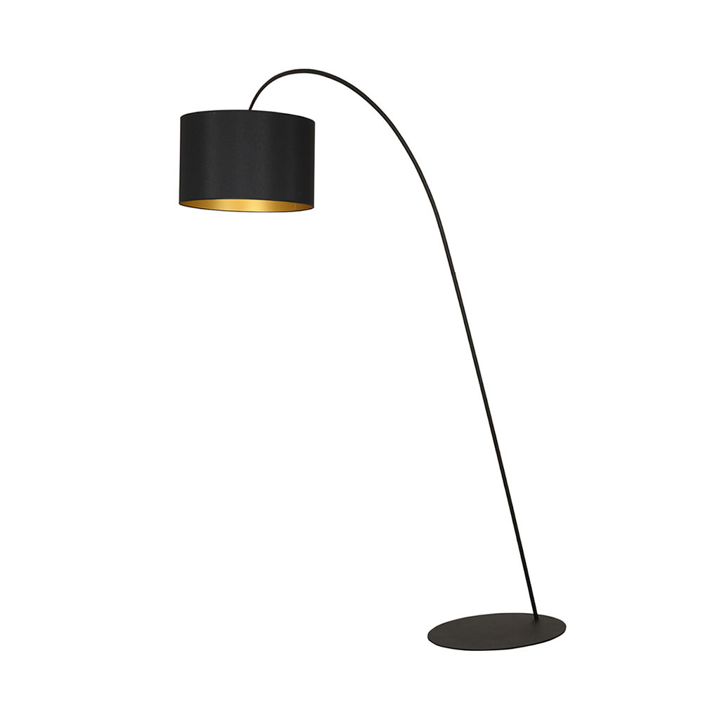

01
Gold Chandelier — Dining Scene
AI interior • Lighting visualization • Product focus
AI CONTENT CREATOR FOR PRODUCT & E-COMMERCE BRANDS
AI product visuals, premium interiors, cinematic Reels and web-ready content — created with strong attention to product shape, materials, scale and brand consistency.


Preserve shape, color, material and proportions.
Build visuals for catalogs, campaigns, Reels and product pages.
Create content with real responsive interfaces and e-commerce use in mind.
SELECTED WORK
Curated product visuals


CASE STUDY 01 • PRODUCT → CONTENT
The goal is not simply to generate a beautiful room. The product must stay recognizable and believable while the surrounding scene becomes campaign-ready.
Place the original product into a premium interior without redesigning its form, materials or proportions.
Use controlled prompting, reference-led refinement and realistic scale before extending the still image into motion.
Original reference, AI interior, refined hero visual and cinematic short-form video.
A repeatable workflow for social media, product pages, ads and campaign content.


CASE STUDY 02 • WEBSITE & E-COMMERCE
Content operations
Structure product names, descriptions, specifications and visual assets so they are clear and consistent across the catalog.
Prepare and maintain Armenian, Russian and English website content while keeping product information aligned.
Support catalog updates, product-card publishing, image preparation and ongoing content maintenance.
Use React and web-development experience to create content that fits responsive layouts and real interface constraints.
AI VIDEO & REELS
Selected motion work
01 • HERO PRODUCT FILM
A premium product-led scene using restrained camera motion and a controlled interior composition. The visual direction keeps the lamp as the clear hero.
Reference → AI interior → cinematic motion.
Classic product styling with smooth cinematic motion.
Sequential on/off behavior with a clear technical brief.
Close-up product visualization with material detail, lighting focus and vertical social framing.
A short experimental scene showing broader AI storytelling range.
WHAT I DO
Creative + technical
Product-focused interiors, lifestyle scenes, hero visuals and controlled edits with strong product consistency.
Image-to-video, cinematic product clips, motion direction and short-form social content.
Product descriptions, specifications, product cards and multilingual catalog content.
Catalog updates, visual preparation, publishing and ongoing website administration.
Detailed prompts and repeatable workflows for product preservation, style consistency and campaign variants.
Responsive content implementation with JavaScript, React.js, Next.js and modern UI workflows.
ABOUT
AI Content Creator • E-commerce Content Specialist • Frontend Developer
I combine AI-assisted visual creation with hands-on website and e-commerce work. My strongest focus is product presentation: keeping the product accurate while building premium visuals, short-form video and publish-ready content around it.
Because I also understand frontend workflows, I create assets with the final destination in mind — product cards, responsive pages, catalogs, social campaigns and conversion-focused content.
AVAILABLE FOR FREELANCE & REMOTE ROLES
I can support product-led brands with AI visuals, short-form video, catalog content and ongoing website content management.